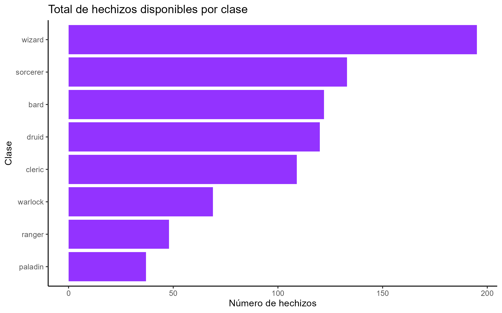
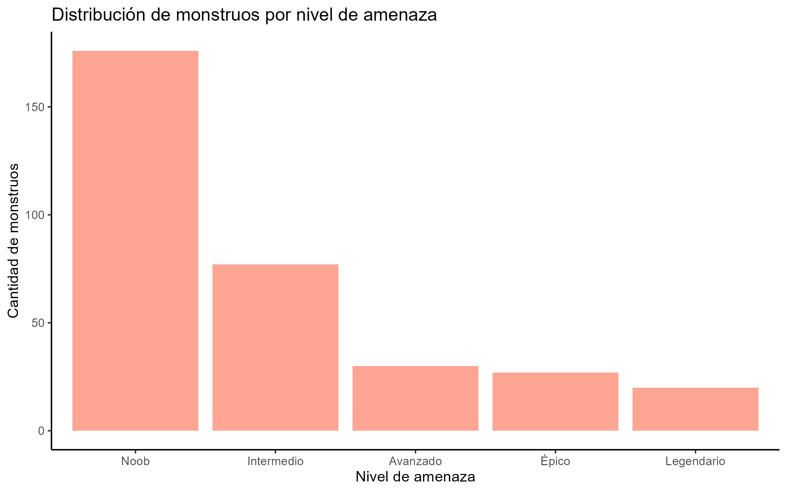
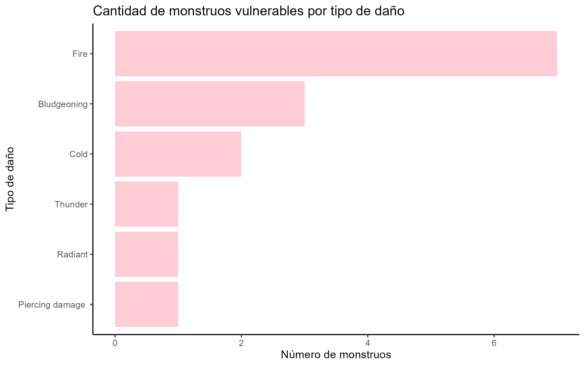

Dungeons & Dragons
Dungeons and dragons o “calabozos y dragones” en español, es un juego de rol narrativo e imaginativo publicado por primera vez en 1947, teniendo distintas ediciones y reglas desde entonces. Se ambienta en un mundo de fantasía medieval con elementos mágicos y culturales inspirados en historias europeas medievales, renacentistas, egipcias, asiáticas, e incluso, nativo americanas. El juego funciona de manera que una persona es el “Dungeon Master” o DM, persona que guiará la narrativa y decidirá el camino de los jugadores a gran escala, mientras que el grupo de jugadores puede ir de 1 a la cantidad que se quiera/pueda.
La naturaleza del juego permite al jugador personalizar a su personaje de la manera que prefiera. Principalmente existen razas, que determinan cómo se verá el personaje fisicamente.Y clases, que determinan características y habilidades del personaje.
Además, existen desafíos que los jugadores se pueden encontrar en su travesía, entre estos, monstruos. Estos monstruos tienen su propio set de “características” similares a las que tendría un jugador (vida, debilidades, fortalezas, raza, tamaño, etc) solo que son controlados por el DM.
Para efectos de este análisis, ocuparemos las reglas y datos de la 5ta edición. Y observaremos tendencias en niveles, dificultades y acceso a hechizos y mosntruos de este mundo.
Pueden conocer más sobre el juego aquí: https://www.dndbeyond.com/
Hechizos
Dentro de las clases que existen en DnD, habrán clases que te permitirán acceder a distintos hechizos de una matriz determinada, distintas clases acceden a distintos tipos/cantidad de hechizos. Y estos mismos pueden ser de distintos niveles, de 0 a 9, para acceder a niveles más altos es necesario que tu personaje suba de nivel, por tanto, tener más horas de experiencia jugando. Por esto es que es interesante saber cómo se distribuye la cantidad de hechizos a través de sus niveles.
El gráfico muestra cómo se distribuyen los hechizos según su nivel de poder, desde nivel 0 (cantrips o trucos) hasta nivel 9, que corresponde a los hechizos más poderosos del juego.
Se observa que los niveles 1 y 2 concentran la mayor cantidad de hechizos, lo que refleja que gran parte del sistema de magia está diseñado para ser accesible durante las primeras etapas de progresión de los personajes. A medida que los niveles aumentan, el número de hechizos disponibles disminuye progresivamente, lo cual es coherente con la lógica del juego: los hechizos de niveles más altos son más escasos, más poderosos y están reservados para personajes avanzados. Esta distribución también sugiere que el juego trata de ser amigable y dar variedad de elección a gente recién empezando una campaña.
Hechizos por clase
Como mencioné anteriormente, lo que va a determinar a cantidad de hechizos a disponibilidad del jugador es tanto el nivel, como la clase que seleccione. No todas las clases poseen magia, pero es interesante observar si existe una distribución igualitaria de hechizos dentro de las clases o si algunas clases tienen más acceso que otras.

El gráfico muestra cuántos hechizos puede aprender o utilizar cada una de las clases mágicas. La diferencia entre ellas es notable y refleja el rol que cada una desempeña dentro del juego.
No es de sorprender que wizard o “magos” sobresalgan con casi 200 hechizos disponibles, ya que por naturaleza del juego, esta clase se esfuerza y estudia para aprender hechizos, tomando tiempo para memorizar y conjurar, mientras que otras clases tienen magia “innata” y hasta por hacer pactos con entidades, por lo que es un camino más “fácil” y por tanto, para equilibrar el juego, tienen menos disponibilidad y variedad de hechizos. Además hay que tener en cuenta que hay clases que se caracterizan por tener cierto tipo de magia, como lo son druid y bard, estos son clases enfocadas a estilos de magia particulares: naturaleza y música, respectivamente. Por lo que no se va a ver a un druida conjurando magia espiritual o necromancia, y esto explica su diferencia de aproximádamente 100 hechizos. Por otro lado, también existen clases que la magia no es su rasgo principal, sino un “bonus” que obtiene además de, por ejemplo, rasgos como fuerza física, carisma, etc. Esto se refleja en ranger y paladin y su disponibilidad de menos de 50 hechizos.
Distribución de poder entre las clases
Una cosa es saber cúantos hechizos tiene cada clase, pero también importa la calidad de esos hechizos. ¿Es mejor tener 100 hechizos de nivel 1 o 10 hechizos de nivel 9? Veamos cómo se distribuyen los niveles y disponibilidad de hechizos entre clases.

Este heatmap muestra cómo se distribuyen los hechizos disponibles para cada clase de Dungeons & Dragons según su nivel de poder (de 0 a 9). Los colores más intensos indican una mayor cantidad de hechizos disponibles en ese nivel y para esa clase.
El patrón revela varias diferencias importantes entre clases:
Wizard es nuevamente la clase con mayor amplitud mágica. Presenta una alta concentración de hechizos en casi todos los niveles, especialmente en niveles intermedios (2 y 3), lo que refleja su versatilidad y acceso a una amplia variedad de herramientas mágicas.
Sorcerer, bard y druid también muestran distribuciones amplias, especialmente en niveles bajos e intermedios. Como se mencionó antes, estas clases tienen estilos de magia más especializados, pero aun así cuentan con un repertorio significativo a lo largo de toda la progresión del juego.
Cleric posee una distribución equilibrada, con más hechizos en niveles bajos y medios. Esto es consistente con su rol de soporte y sanación, donde los conjuros no requieren ser necesariamente de alto nivel para ser efectivos.
Warlock, ranger y paladin tienen menos variedad y se concentran principalmente en niveles bajos. e incluso hay niveles que no tienen hechizos. Estas clases combinan habilidades no mágicas con algunos hechizos, por lo que su repertorio es más reducido y especializado.
Aquí se ve cómo varía la complejidad mágica de cada clase y qué tan dependientes son del uso de hechizos en su progresión. Mientras algunas clases basan casi todo su poder en la magia, otras la utilizan solo como complemento.
Monstruos
En DnD, los monstruos representan los principales desafíos que enfrentan los jugadores durante una aventura. Cada criatura posee características únicas, como fuerza, habilidades especiales, resistencias o capacidades mágicas, que determinan qué tan difícil es combatirla. Para reflejar esta dificultad, el juego utiliza el challenge rating (CR) o nivel de amenaza, un indicador numérico que resume cuán peligrosa es una criatura.
Analizar a los monstruos según su nivel de amenaza permite entender cómo se distribuyen los desafíos del juego, qué tipo de criaturas son más frecuentes y en qué rangos de peligro se concentran.

El gráfico muestra que la mayoría de los monstruos del juego se concentran en los niveles de amenaza más bajos. La categoría “noob” (nuevo) agrupa por lejos la mayor cantidad de criaturas, lo que refleja que DnD ofrece una amplia variedad de enemigos diseñados para encuentros tempranos o para grupos menos experimentados. Conforme aumenta el nivel de amenaza, la cantidad de monstruos disponibles disminuye de manera notable.
Esta distribución tiene sentido desde el diseño del juego, ya que los monstruos de alto CR suelen ser más complejos, poderosos y narrativamente significativos, por lo que aparecen con menor frecuencia y están pensados para situaciones específicas dentro de una campaña y que también pueden llevar varias sesiones en vencerlos. En cambio, los monstruos de bajo CR cumplen un rol fundamental como desafíos recurrentes en las primeras etapas del juego, permitiendo que los jugadores progresen y se familiarizen con las dinámicas antes de enfrentarse a amenazas mayores.
Inmunidades
Además de su nivel de amenaza, los monstruos de DnD poseen diversas inmunidades que determinan a qué tipos de daños o condiciones no pueden ser afectados. Estas inmunidades obligan a los jugadores a adaptar sus estrategias y seleccionar hechizos adecuados para superar resistencias especiales.

El gráfico muestra cuántos monstruos poseen inmunidad a distintas condiciones o tipos de daño.
La inmunidad más frecuente es charmed, lo que indica que muchos monstruos no pueden ser manipulados emocionalmente ni controlados mediante magia de encanto. Esto coincide con criaturas que poseen fuerte voluntad o una naturaleza mágica que las hace difíciles de influenciar.
Le siguen poisoned y poison, ambas relacionadas con toxinas. Esto refleja que una gran parte del bestiario (muertos vivientes, elementales, criaturas mágicas) simplemente no posee un cuerpo biológico vulnerable al veneno, por lo que estas estrategias de combate suelen ser menos efectivas.
También destacan inmunidades como fire, exhaustion o lightning, que corresponden a tipos de daño elemental o estados físicos difíciles de aplicar a criaturas no vivas o de naturaleza mágica.
A medida que avanzamos en la lista, las inmunidades se vuelven menos comunes (como psychic, necrotic, deafened), lo cual sugiere que solo criaturas muy específicas presentan estas resistencias.
Se revela un patrón importante: las inmunidades más comunes protegen contra efectos que los jugadores suelen usar con frecuencia, por lo que conocerlas permite planificar estrategias más efectivas y evitar hechizos o ataques que serán inútiles contra muchos enemigos.
Vulnerabilidades
Así como muchos monstruos poseen inmunidades, también esta el caso de que posean alguna vulnerabilidad. Cuando se sabe la vulnerabilidad del monstruo es más fácil planear el ataque y explotar esta “debilidad”.

Se puede ver cuántos monstruos presentan vulnerabilidad a distintos tipos de daño. En DnD, las vulnerabilidades son especialmente relevantes porque permiten que los ataques que utilicen ese tipo de daño inflijan el doble de daño, lo que puede cambiar radicalmente el desarrollo de un combate.
Lo primero que destaca es que muy pocos monstruos presentan vulnerabilidades, y cuando existen, tienden a concentrarse en tipos de daño bastante específicos. La vulnerabilidad más común es fire, seguida por bludgeoning, mientras que otros daños aparecen en menor medida. Esto sugiere que, a diferencia de las inmunidades (mucho más frecuentes), las vulnerabilidades son excepciones y actúan como puntos débiles particulares de ciertos monstruos.
Hechizos VS Monstruos
Finalmente, vamos a comparar directamente la proporción de hechizos disponibles en cada nivel con la proporción de monstruos según su nivel de amenaza (CR). Esto para ver mejor cómo se distribuyen las herramientas y desafíos en DnD. Aunque ambos utilizan escalas distintas, normalizarlos a un rango común de 0 a 9 permite observar cómo se relaciona la progresión del poder mágico del jugador con la dificultad creciente de los encuentros.

Según el gráfico se puede observar que los monstruos están fuertemente concentrados en niveles bajos. En el CR 0, más del 60% de los monstruos se encuentran en este rango, mientras que la proporción disminuye abruptamente a medida que aumenta la dificultad. A partir de CR 5 en adelante, los monstruos representan solo una fracción mínima del total. Esto refleja el diseño clásico de D&D: la mayoría de los encuentros están pensados para personajes principiantes o intermedios, y los enemigos verdaderamente peligrosos son excepcionales.
También se puede observar que los hechizos presentan una distribución mucho más equilibrada. Si bien los niveles 1 y 2 tienen una mayor proporción de hechizos, la caída hacia niveles superiores es mucho más gradual que en los monstruos. Esto sugiere que el juego entrega herramientas mágicas de forma más homogénea a medida que los jugadores suben de nivel, permitiendo mantener un crecimiento sostenido de opciones sin depender únicamente del combate.
Se revela una diferencia estructural, mientras los monstruos escasean en niveles altos, los hechizos continúan siendo numerosos. Esto puede interpretarse como un énfasis del juego en que los personajes de nivel alto tengan mayor variedad y complejidad táctica en “recompensa” a su experiencia, incluso si los encuentros con enemigos equivalentes son menos frecuentes.
Por último, vale la pena observar que en el nivel1, la proporción de hechizos y monstruos es relativamente similar, indicando que esta etapa del juego está más estandarizada y equilibrada en cuanto a desafíos y recursos.